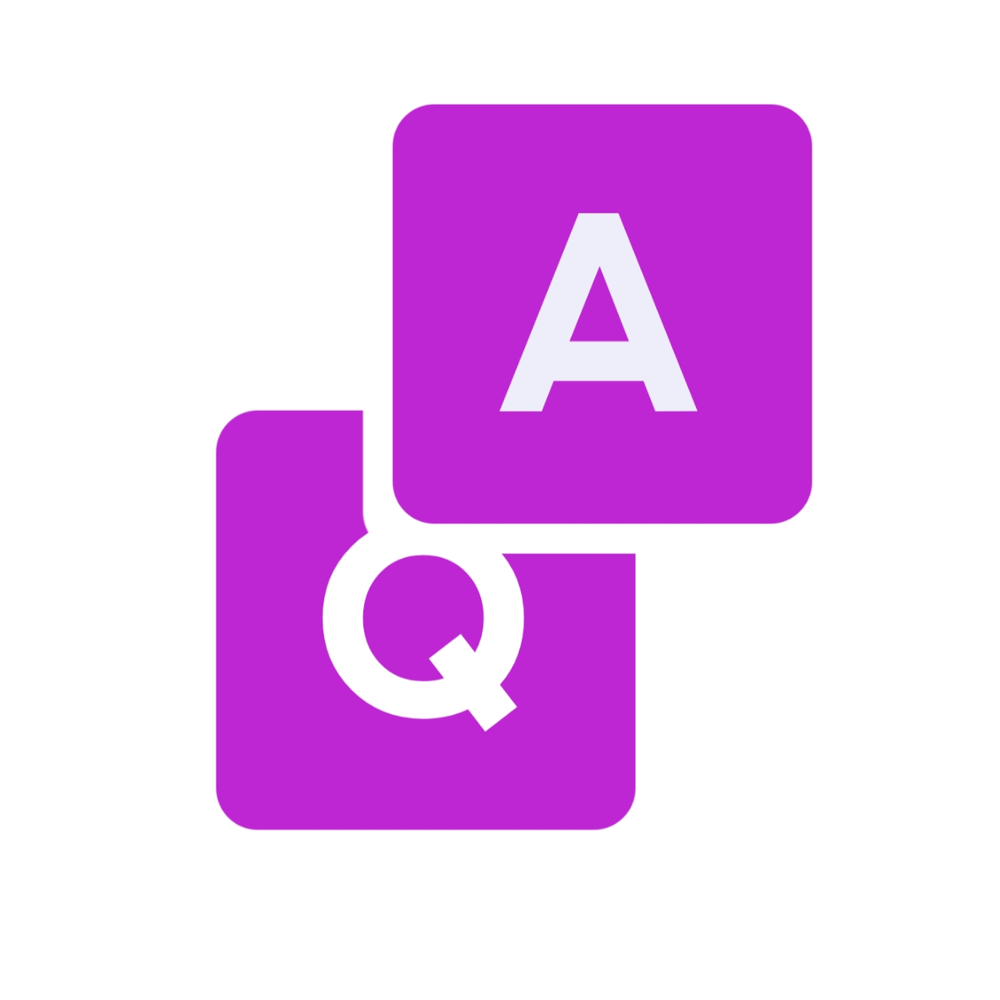

About Us
FreeFLW adalah situs web yang menyediakan layanan instagram secara gratis. Salah satu layanan kami yang banyak digunakan adalah followers instagram. layanan kami aktif 24/7 anda bisa menggunakannya kapan saja.

FAQ
Bagaimana cara menggunakan FreeFLW?
Cara menggunakan FreeFLW sangat mudah
Ikuti langkah-langkahnya dibawah ini!
1.Login menggunakan akun instagram anda
2.Matikan Autentikasi Dua Faktor
3.Pastikan akun Instagram anda bersifat publik (Jangan privasikan akun anda!)
4.Pilih layanan yang mau digunakan
5.Klik Submit
Cukup mudah bukan? Dalam waktu 1-2 jam
followers akan masuk ke akun instagram anda.
Apakah FreeFLW aman untuk digunakan?
Kami berusaha mengamankan data anda seaman mungkin.
Tidak ada kebocoran data. Tidak ada virus.
Yang dapat mengakses data anda hanyalah
anda seorang.
Apakah toolsnya aman?
Kami mengirim followers
dalam waktu yang normal.
Tidak akan ada peringatan dilarang atau spam
Apakah situs FreeFLW benar-benar gratis?
Situs FreeFLW benar-benar gratis & anda dapat menggunakanya kapan saja
Bagaimana jika followers tidak masuk?
Jika followers tidak masuk dalam waktu 1-2 jam. Anda bisa menghubungi contact kami disini!
Bagaimana jika saya login menggunakan akun palsu?
Followers akan masuk ke akun instagram
yang anda gunakan untuk login.
Tidak peduli apakah itu akun asli atau palsu.